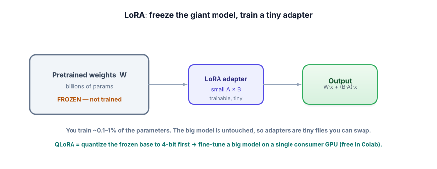

LoRA & QLoRA
A 7-billion-parameter model has 7 billion numbers. Training all of them needs a lot of GPU memory.
LoRA (Low-Rank Adaptation) freezes those numbers and trains two small extra matrices beside each big one.
The small pair learns a correction that is added to the big matrix's output.
You end up training well under 1% of the numbers, and the result is a file of megabytes.
QLoRA also squeezes the frozen model into 4-bit numbers, so a big model fits on one small GPU.
LoRA is like putting clip-on lenses over a camera instead of rebuilding it. The camera (the frozen base model) stays exactly as it was; the small clip-on (the adapter) bends the picture the way you want, and you can swap clip-ons for different jobs. QLoRA is the same, but you also pack the camera body into a smaller case (4-bit) so it fits in your bag.
| In the picture | In the real system |
|---|---|
| The camera, left exactly as it was | The frozen base weights W, never updated |
| The small clip-on lens | The adapter: matrices A and B, the only trained part |
| How the clip-on bends the picture | The output becomes Wx + BAx: original plus a learned correction |
| Swapping clip-ons for different jobs | Loading a different adapter file on the same base model |
| Packing the camera into a smaller case | QLoRA: the frozen base stored in 4-bit, the adapter still trained normally |
Where the picture breaks. A clip-on can't add a feature the camera lacks; LoRA can steer what the model can already do, but it is a poor way to pour in new facts.
Move the rank and pick which matrices get adapters. Every count is r × (inputs + outputs) per matrix, using Qwen2.5-7B's real shapes.
Going deeper
Full fine-tuning of a large model needs a small data center. LoRA and QLoRA are the breakthroughs that let you fine-tune on a single free GPU by training a tiny add-on instead of the whole model. This is how fine-tuning is actually done today — and you can run it for free.
Why not just fine-tune the whole model?
Full fine-tuning updates every weight, which means holding the entire model plus optimizer state in memory — tens to hundreds of gigabytes for a real model. That’s expensive and out of reach on a free GPU. The insight behind LoRA (Low-Rank Adaptation): you don’t need to move all those weights to teach a new behavior. Freeze the giant pretrained model and train a tiny set of new “adapter” weights alongside it. You end up training ~0.1–1% of the parameters and getting most of the benefit.

W; train only the small low-rank adapter B·A. The model’s output becomes W·x + (B·A)·x — original behavior plus your learned adjustment.PEFT (parameter-efficient fine-tuning) trains a small number of new parameters instead of all of them. LoRA is the most popular PEFT method: it freezes the base model and inserts small low-rank matrices (the adapter) whose rank r controls capacity. QLoRA goes further: it quantizes the frozen base model to 4-bit (shrinking its memory ~4×) and trains a LoRA adapter on top — so a model that wouldn’t otherwise fit now trains on one consumer/free GPU. The trained adapter is a tiny file (megabytes) you load on top of the base.
A real fine-tune you can run for free (turn on the free GPU: Runtime → Change runtime type → GPU). Uses Hugging Face’s free libraries. Exact argument names shift across versions — treat this as the shape.
!pip install transformers peft trl bitsandbytes datasets
import torch
from transformers import AutoModelForCausalLM, AutoTokenizer, BitsAndBytesConfig
from peft import LoraConfig
from trl import SFTTrainer, SFTConfig
model_id = "Qwen/Qwen2.5-0.5B" # small + free; scale up later
bnb = BitsAndBytesConfig(load_in_4bit=True, # QLoRA: 4-bit frozen base
bnb_4bit_quant_type="nf4", bnb_4bit_compute_dtype=torch.float16) # free Colab T4 has no bf16; use torch.bfloat16 on A100/L4
model = AutoModelForCausalLM.from_pretrained(model_id, quantization_config=bnb, device_map="auto")
tok = AutoTokenizer.from_pretrained(model_id)
from datasets import load_dataset
train_ds = load_dataset("json", data_files="train.jsonl", split="train") # one {"messages": [...]} chat per line (Lesson 5.3)
lora = LoraConfig(r=16, lora_alpha=32, # the tiny trainable adapter
target_modules="all-linear", lora_dropout=0.05, task_type="CAUSAL_LM")
trainer = SFTTrainer(model=model, train_dataset=train_ds, processing_class=tok, peft_config=lora,
args=SFTConfig(output_dir="out", num_train_epochs=2,
per_device_train_batch_size=2, learning_rate=2e-4,
fp16=True, # SFTConfig defaults to bf16; a T4 needs fp16
eos_token="<|im_end|>")) # Qwen base models: align EOS with the chat template (TRL docs)
trainer.train()
trainer.save_model("my-adapter") # tens of MB (~8.8M LoRA params for 0.5B at r=16, per its config), not GB — the whole "fine-tune"The output isn’t a new multi-gigabyte model — it’s a tiny adapter you load on top of the base at inference. That’s why teams can serve many fine-tunes cheaply: one base model, many small adapters swapped in as needed.
From the model's config.json: hidden size 3,584, MLP size 18,944, 28 layers, 28 query heads and 4 key/value heads of size 128 (so k and v project to 512). The model card lists 7.61B parameters.
- LoRA on one matrix. A weight W of shape d_out x d_in gets B (d_out x r) and A (r x d_in), so r x (d_in + d_out) trainable parameters. The update is W + (alpha/r) x BA, and B starts at zero, so training starts from the unchanged model (LoRA, arXiv 2106.09685; PEFT's default init).
- One layer, r = 16, all linear layers. q and o: 16 x (3,584 + 3,584) = 114,688 each. k and v: 16 x (3,584 + 512) = 65,536 each. gate and up: 16 x (3,584 + 18,944) = 360,448 each. down: 360,448. Layer total = 1,441,792.
- Whole model. 1,441,792 x 28 = 40,370,176 trainable parameters, about 0.53% of 7.61B. Adapter file: about 81 MB in bf16, 161 MB in fp32. (q and v only, the LoRA paper's main setting: about 5.0M, 0.07%.)
- Memory. Full fine-tuning at about 18 bytes per parameter (HF memory guide) = 137 GB. QLoRA: the frozen base in 4-bit NF4 is about 0.5 bytes per parameter = 3.8 GB (plus small quantization constants, which QLoRA's double quantization shrinks), and the 40.4M adapter parameters at 18 bytes = 0.73 GB, plus activations. The QLoRA paper fit a 65B model on one 48 GB GPU (arXiv 2305.14314).
- 12 departments. 12 full copies in bf16 = 12 x 15.2 GB = 183 GB. One base + 12 adapters = 15.2 GB + 12 x 81 MB = about 16.2 GB.
Size a LoRA yourself
Pick a base model and a rank, and watch what you would actually be training. The percentage is the whole reason LoRA exists.
- Full fine-tuning updates every weight — expensive; LoRA freezes the base and trains a tiny adapter.
- You train ~0.1–1% of parameters; the adapter is a small (MB) file you load on top of the base.
- QLoRA = 4-bit quantized base + LoRA → fine-tune a big model on one free/consumer GPU.
- The base model is untouched, so you can serve many adapters from one base and swap them.
- Rank
rsets adapter capacity; start small (8–16), raise if underfitting.
Your company wants 12 specialized variants of one base model (one per department), served cost-effectively. Why is LoRA a great fit?
Why does LoRA make fine-tuning runnable on a free GPU?
A LoRA adapter on a 4,096 x 4,096 weight matrix with rank r = 8 adds how many trainable parameters?
Which statement about QLoRA is accurate?
1. In one sentence each, explain what LoRA and QLoRA each contribute.
2. Your QLoRA run on the free GPU runs out of memory. Name two levers to fit it.
3. Why can a tiny adapter (a fraction of a percent of the weights) meaningfully change behavior?
▸ Show solutions & reasoning
1. LoRA freezes the base and trains a small low-rank adapter, so you update ~1% of parameters instead of all of them. QLoRA additionally loads the frozen base in 4-bit (quantized), cutting its memory ~4× so a big model fits on a single small GPU. LoRA saves training params; QLoRA saves base-model memory.
2. Levers: use a smaller model or ensure 4-bit (QLoRA) is on; reduce batch size (and use gradient accumulation to keep effective batch size); shorten max sequence length; lower the LoRA rank; or enable gradient checkpointing. Each trades a little speed/quality for memory.
3. Because the base model already contains the capability — fine-tuning only needs to steer it toward your task, not build it. Research found that the weight changes needed to adapt a model are “low-rank,” i.e., they live in a small subspace, so a few small matrices can capture them. You’re nudging a capable model, not retraining one, so a tiny adapter is enough.
A few practical levers. Rank r sets the adapter’s capacity: low (4–8) for simple style/format shifts, higher (16–64) for harder tasks; too high wastes parameters and risks overfitting, too low underfits — tune it against validation. lora_alpha scales the adapter’s influence (a common heuristic is alpha ≈ 2×r). Target modules decides which layers get adapters; “all-linear” is a strong default, but adapting only attention projections is lighter. As always, you let evaluation (Lesson 5.6) decide, not folklore.
At serving time you have two options. You can merge the adapter into the base to get a single standalone model (simplest to deploy, but you lose the swap-ability). Or you can keep adapters separate and load them on top of a shared base — which is what makes the “one base, many fine-tunes” pattern so powerful: serving infrastructure can hold one base in memory and dynamically apply different adapters per request, even batching requests for different adapters together. This is how a platform offers dozens of customer-specific fine-tunes affordably.
The takeaway: LoRA didn’t just make fine-tuning cheaper to train — it made fine-tunes cheap to store and serve at scale, which is arguably why fine-tuning became practical for everyone, including you on a free GPU.
labs/11_lora_tiny.pyFree and offline once set up: Ollama with qwen2.5:7b, plus the packages in labs/README.md. From the course folder:
python labs/11_lora_tiny.pyWhat to look for: The first half prints the LoRA parameter math for the real Qwen2.5-7B config; check that its totals match this page's 40,370,176 at r = 16 on all linear layers, then change r to 8 and target modules to q and v only and watch the count drop. The second half trains a real adapter on a tiny model: note the 'trainable %' line and the adapter's size on disk next to the base model's.
Small samples: these labs use 5 to 20 cases so they run in minutes on a laptop. Where they report a rate, they print n and a 95% Wilson interval. Read them as a demonstration of the mechanism, not as a measured rate for your system; for that you need hundreds of cases and several seeds.
▸ Recorded output (our run, 2026-11-03, qwen2.5:7b on a laptop GPU)
base model: 798,848 params. Pre-training it on 'count UP' sequences (0123456789012...)
base loss count-up=0.097 count-down=10.885 <- it never saw 'down'
LoRA r=8 on attention + MLP: trainable=65,536 of 864,384 (7.6%)
after 0 LoRA steps: count-down loss=10.878 count-up loss=0.098
after 100 LoRA steps: count-down loss=0.100 count-up loss=9.747
after 200 LoRA steps: count-down loss=0.098 count-up loss=10.912
after 300 LoRA steps: count-down loss=0.097 count-up loss=10.695
frozen base tensors changed during LoRA training: 0 (expect 0)
adapter switched OFF: count-up loss=0.098 count-down loss=10.882 <- the old skill is back: forgetting lived in the adapter, not the base
saved adapter: 266 KB vs base model ~3120 KB in fp32
merge_and_unload: max logit difference after merging = 2.86e-06 (merged = same model, no adapter overhead)
Look: count-down loss falls while the base stays byte-identical. But count-up loss rose: with the adapter
on, the model forgot the old skill. That is why you eval BOTH the new task and the old ones (Lesson 5.6),
and why keeping adapters separate (swap or disable per task) is a real advantage of LoRA.Your numbers will differ a little run to run. Full log: labs/outputs. Source: labs/11_lora_tiny.py.
Warm-up. Compute LoRA trainable parameters for a model with hidden size 2,048, MLP size 8,192, 24 layers, full-width k and v (no grouped-query attention), r = 8 on all seven linear layers per block.
▸ Solution
q, k, v, o: each 8 x (2,048 + 2,048) = 32,768, so 4 x 32,768 = 131,072. gate and up: 8 x (2,048 + 8,192) = 81,920 each = 163,840. down: 81,920. Per layer = 131,072 + 163,840 + 81,920 = 376,832. x 24 = 9,043,968, about 9.0M. In bf16 that's an 18 MB adapter.
Transfer. Your QLoRA fine-tune for a support-reply style works, but answers about product specs got worse. A teammate suggests raising r from 16 to 128 to 'learn the specs'. What do you say?
▸ Solution
Wrong lever. Product specs are knowledge that changes; that is RAG's job, and fine-tuning is a poor way to add facts. The drop in spec answers is likely forgetting or style override from training. Check whether training examples contained wrong or outdated specs. Fix it by keeping r modest, adding general and spec-grounded examples where the answer comes from retrieved context (so the model learns to use context rather than memorise), and measuring both the style metric and spec accuracy against the base model. Biderman et al. found LoRA forgets less than full fine-tuning, but it isn't zero.
Stretch. You serve 40 customer-specific LoRA adapters on one 7B base. Traffic is skewed: 3 adapters get 70% of requests. Design serving and deployment.
▸ Solution
Keep one base model in GPU memory and load adapters dynamically; use a server that batches requests for different adapters together (the S-LoRA line of work, arXiv 2311.03285, showed thousands of adapters on one GPU). Keep the 3 hot adapters resident and load the long tail from CPU memory or disk on demand with an LRU cache. Consider merging an adapter into a dedicated deployment (PEFT's merge_and_unload) only if a tenant needs isolation or the lowest latency. Version adapters with the base model hash, since an adapter is only valid for the exact base it was trained on. Run each adapter's eval before promoting it, and roll out per tenant.
Junior Explain LoRA in plain terms.
▸ Model answer
Instead of updating a huge weight matrix W during fine-tuning, LoRA freezes W and learns a small low-rank update: two thin matrices B and A whose product has the same shape as W. The output becomes Wx plus a scaled BAx. Because r is small (8, 16, 64), you train a tiny fraction of the parameters, often well under 1%. The LoRA paper reported 10,000x fewer trainable parameters and 3x less GPU memory than full fine-tuning on GPT-3 175B, with on-par quality on their benchmarks. You can merge the update into W afterwards, so there's no extra inference latency.
Mid How do you choose r, alpha and target modules?
▸ Model answer
Start with sensible defaults and let the eval decide. Target modules: all linear layers is a strong default (QLoRA applied adapters to all linear layers, and PEFT supports 'all-linear'); attention-only is lighter. Rank: 8-16 for style and format, higher for harder tasks, raising it only if the model underfits on validation. Alpha scales the update by alpha/r; many people keep alpha around r to 2r, and rsLoRA scales by alpha over the square root of r so higher ranks behave more stably. Learning rate matters more than people expect: adapters usually use around 1e-4 to 2e-4. Then sweep a couple of settings on a held-out set.
Senior When would you choose full fine-tuning over LoRA?
▸ Model answer
When the target needs a large change to the model and you have the data and compute: continued pretraining on a new domain or language, or heavy instruction tuning with hundreds of thousands of examples. Biderman et al. found LoRA substantially underperformed full fine-tuning on code and math in those regimes, while forgetting less of the base model's other abilities, and that full fine-tuning learns updates of much higher rank. For most product work (style, format, a narrow task, many tenant variants), LoRA wins on cost, iteration speed and serving. The choice is driven by an eval on both target and general ability.
LoRA is the how; the most common what is teaching a model to follow instructions in your style. Next: instruction tuning.
In one line: LoRA leaves the big model alone and trains a small add-on that nudges its output.